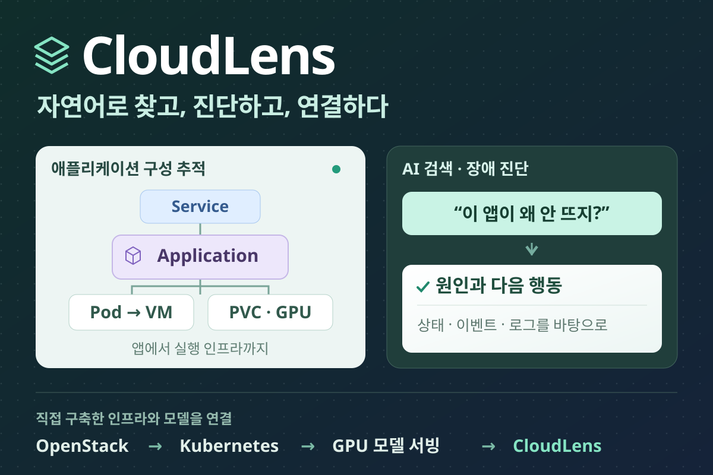
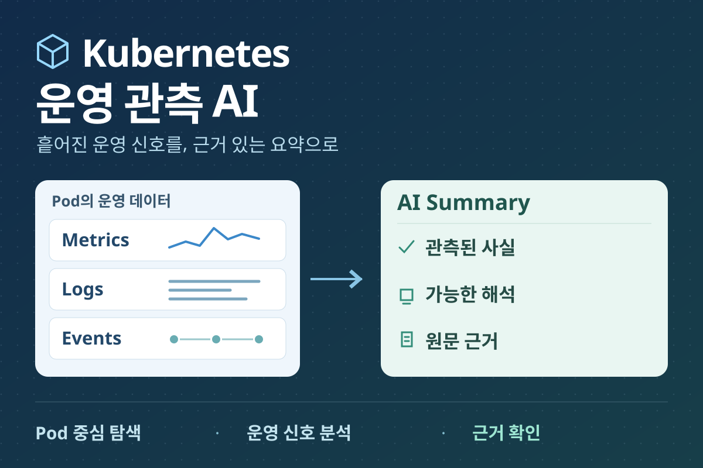
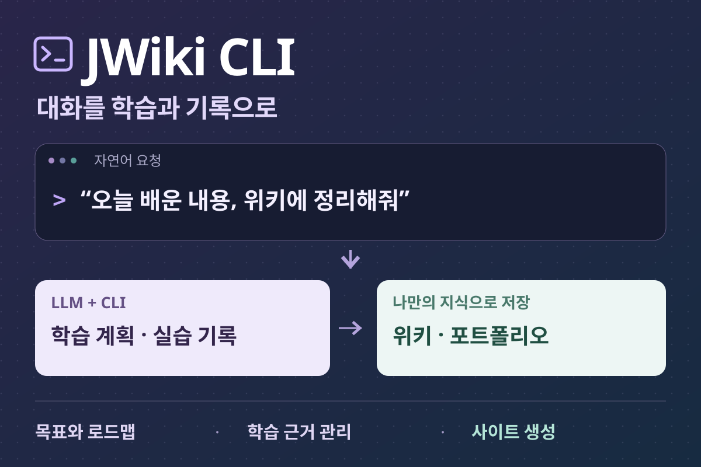
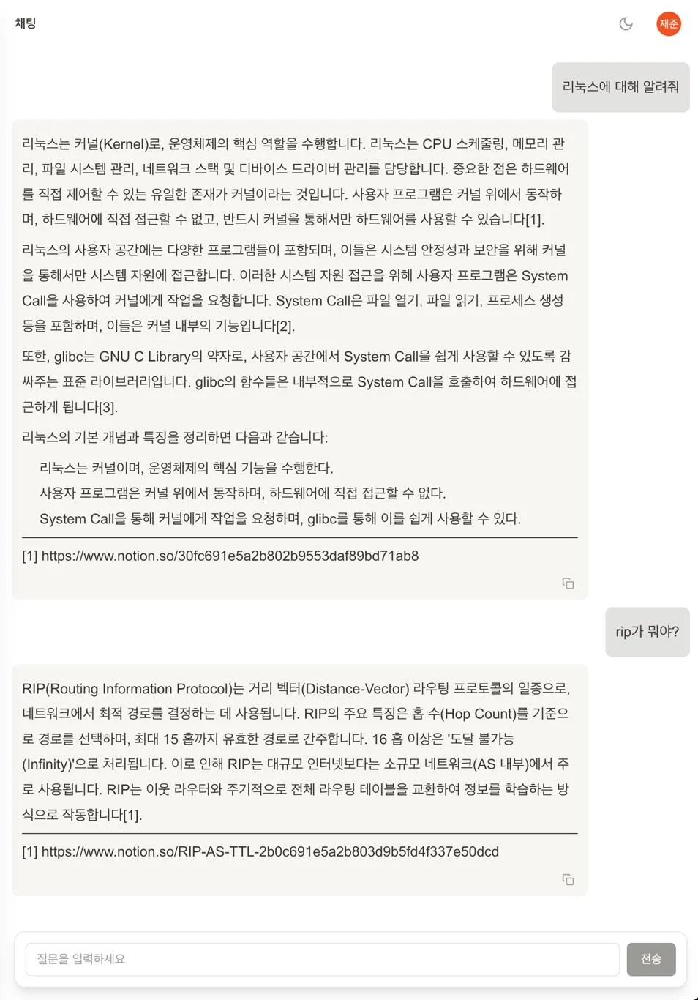
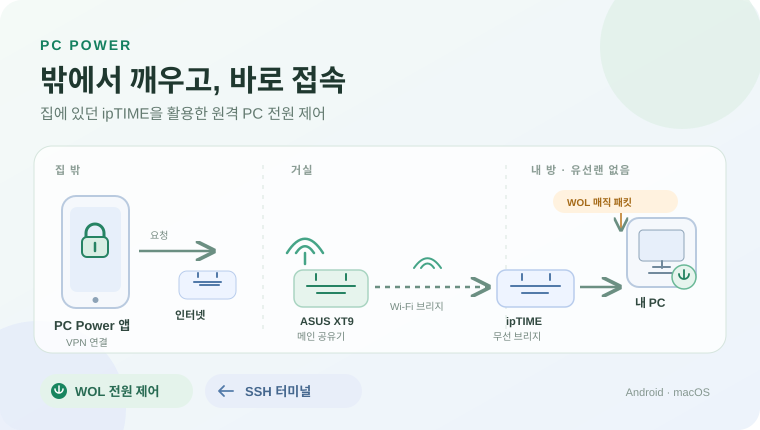

개인 프로젝트
직접 정의한 문제와 구현 범위, 확인 가능한 결과를 중심으로 프로젝트를 살펴볼 수 있습니다.

OpenStack·Kubernetes 기반 클라우드 및 GPU 모델 서빙 환경 구축과 자연어 자원 탐색·장애 진단을 지원하는 AI 인프라 관리 애플리케이션 개발
집의 데스크탑에 OpenStack과 Kubernetes·GPU 모델 서빙 환경을 구축하고, 직접 배포한 모델로 자연어 자원 탐색·장애 진단과 앱 구성을 제공하는 CloudLens를 개발했습니다.
인프라 구축 · 모델 서빙 · 웹 애플리케이션 설계와 개발 자연어 자원 탐색·장애 진단과 애플리케이션 구성 추적 구축 명령어, 실제 기능 화면, 내부 설계와 AI 실행 기록대표 평가 결과고정 33건 전체 성공 15/33 → 31/33인자 정확 일치율 36% → 92% · 오호출 2건 → 0건
Fine-tuning · Evaluation
한국어 Kubernetes 함수 호출 오류 분석과 LoRA 파인튜닝
소형 모델에서 발견한 인자 누락·추가와 오호출을 LoRA로 교정하고, 같은 33건에서 전체 성공 15건 → 31건의 응답 변화를 확인했습니다.
정답 데이터 생성 · LoRA 학습 · 서빙 · 요청별 평가 구현 고정 33건 전체 성공 15/33 → 31/33 인자 정확 일치율 36% → 92% · 오호출 2건 → 0건
Kubernetes 운영 관측 AI
Pod의 Metrics·Logs·Events를 수집하고, 관측 신호·해석·근거를 분리한 AI Summary로 연결했습니다.
기획 · 풀스택 · AI Workflow Metrics · Logs · Events 근거 분리 탭별 AI Summary 3개 기능 시연
JWiki CLI: LLM으로 사용하는 개인 학습·기록 관리 도구
LLM과의 자연어 대화로 학습 계획과 기록을 관리하고, Markdown과 학습 데이터를 위키·로드맵·포트폴리오로 생성하는 개인 도구입니다. 개발 배경과 실제 사용 흐름, 스킬·CLI 개선 과정과 얻은 변화를 소개합니다.
CLI·스킬 설계 · 학습 데이터 관리 · 정적 사이트 생성 자연어 요청 → 학습 계획·실습 기록 → 위키·포트폴리오 현재 목표와 하루 학습 범위를 정하고, 확인한 근거를 다음 학습에 재사용합니다.
Notion RAG 개인 지식 비서
Notion 문서 수집과 임베딩부터 근거 기반 실시간 질의응답, 퀴즈·채점·학습 통계까지 하나의 서비스로 연결했습니다.
문서 수집 · 검색 · 생성 · 결과 관리 수집 → 검색·채팅 → 퀴즈·통계 WebSocket 응답과 사용자별 학습 이력
PC Power — 집 밖에서 PC를 켜고 끄고, SSH로 작업하는 앱
WireGuard 자동 접속과 Tapo·WOL 전원 제어, 소비전력 확인과 SSH 터미널을 제공하는 설치형 앱
네트워크 구성·기능 설계와 AI 코딩 도구를 활용한 앱 개발 VPN 접속부터 Tapo 전원·WOL·SSH까지 한 앱에서 제어 소비전력 확인·보안 저장소·Fold5 전체화면 터미널